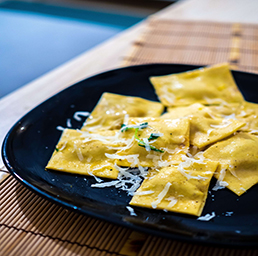
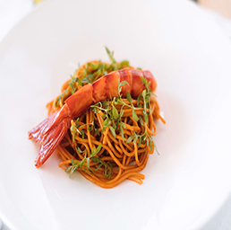
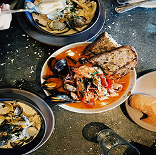
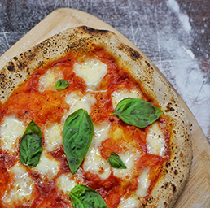

Where to Eat
As with so many places in Italy, I don’t think you’ll have a bad meal on Capri. Skip the ones in the marina right by the ferries and you should be good to go. You’re in Italy, so just enjoy the bread, pizza, pasta, and gelato on repeat. Capri is known for it’s lemons, so be sure to have lots of lemon anything– from pasta to gelato. Also, make sure you have a lot of Caprese salad!




Da Tonino: consistently reported as one of the best culinary experiences on the island, this fine dining restaurant hits all the marks: atmosphere, food, and service.
Salumeria da Aldo: a delicious little sandwich shop that serves up classic Italian sandwiches at a great price. Perfect for a casual lunch.
Buca di Bacco da Serafina: they have a beautiful panoramic window and serve delicious, fresh fish without breaking the bank.
Da Gemma: this restaurant has been around for years and years and the food is consistently amazing. They serve up amazing pizzas and a delicious seafood pasta.